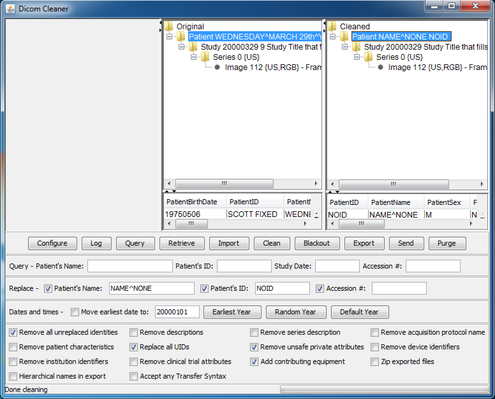
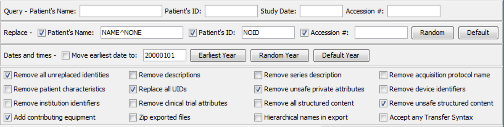
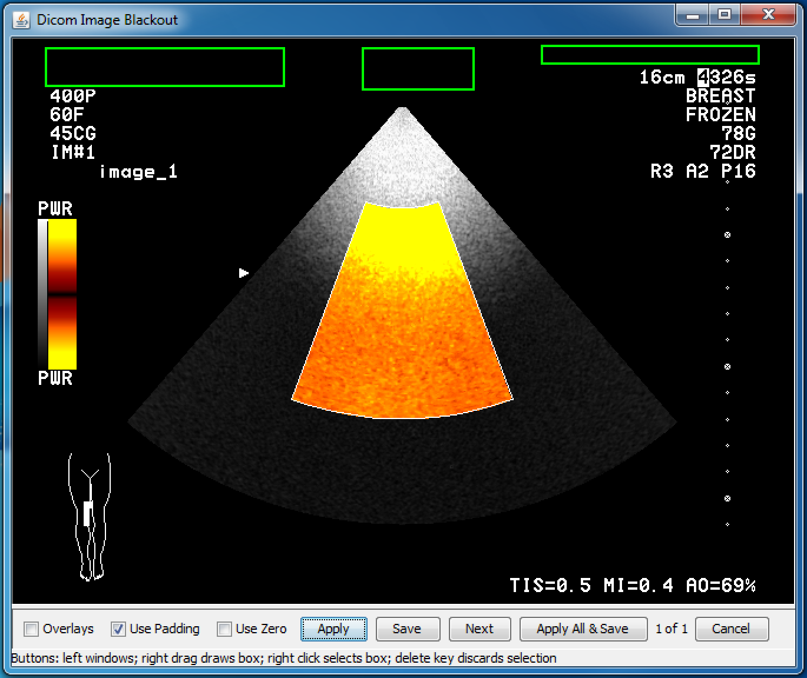
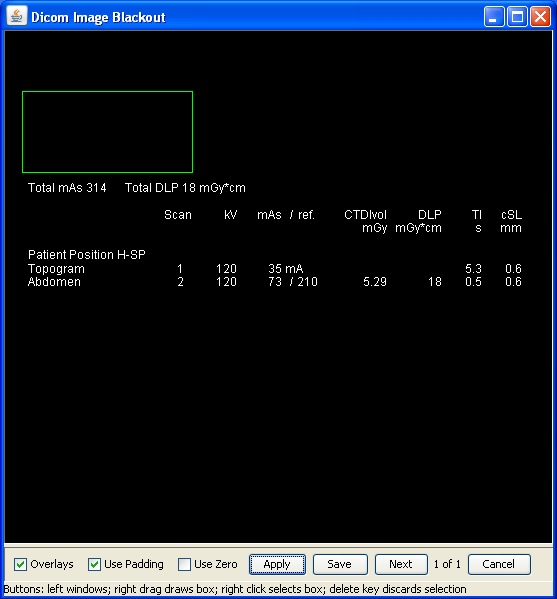
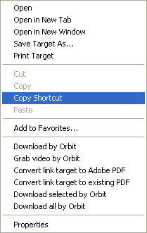
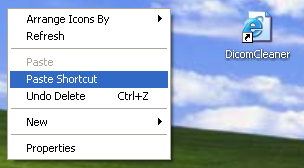
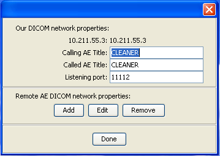
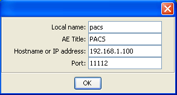
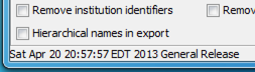

|  |
DicomCleaner™ is a free open source tool with a user interface for importing, "cleaning" and saving sets of DICOM instances (files). It can:
"Cleaning" is used to refer to the process of removing and/or replacing information in the DICOM "header". The user is given control over what to remove and replace, including the ability to import and export without doing any cleaning at all, or to completely de-identify the header and replace the identifying attributes with new values. Use cases that are supported include:
The user is provide with control over:
The following panel shows the control panel with default values for the checkboxes suitable for a typical de-identification scenario:
|  |
As an example of how to perform the cleaning process, the following steps might be performed to query, retrieve, de-identify, blackout and export images to a zip file (assuming that the network has already been configured; see How to configure it):
To import images from media such as CDs or the local file system instead or retrieving over the network, replace steps 1 through 5 with a press of the Import button and navigate using the popup dialog to the drive, folder or DICOMDIR and press Open (Windows) or OK (Mac); no network configuration is required.
Any steps of this process can be repeated as necessary; retrieved, imported and cleaned patients, studies, series and images remain until the application is closed unless they are explicitly selected and purged.
If desired, the process can be executed without performing any de-identification (leaving the DICOM headers and pixel data intact) by setting the following configuration of checkboxes, allowing images to be imported or retrieved, then exported or transferred elsewhere, with a "dummy" cleaning step, and in this case, since no Blackout is required, any Transfer Syntax (type of compression) can be accepted:
 |
If the "Remove all unreplaced identities" is not checked, then the following options have no effect:
The following actions are applied regardless of whether "Remove all unreplaced identities" is not checked or not:
I.e., you can't change the dates or selectively remove descriptions, characteristics and identifiers without doing the other stuff.
If the "Dates and Times - Move earliest date to" checkbox is left unchecked then all dates and times are left unchanged. This is the recommended setting when studies need to be related longitudinally, and are de-identified on separate occasions, and when dates are used to correlate images with other sources of information. However, the policy governing de-identification may require that dates be modified, and if the box is checked, then all the dates and times are shifted relative to the same epoch, such that the earliest date and time in the entire set of selected instances is moved to the epoch. The epoch can be specified explicitly in the text box, which has a default date of 20000101. Alternatively, the earliest year amongst the selected set can be detected by pressing the appropriate button, and the text box values will change to January 1st of the earliest year. Another option is to choose a random year.
 |
There is no mechanism provided to re-use the same offset when studies are de-identified on different occasions. However, if the earliest date method is used, and the earliest previous original images are imported and selected, and Earliest Year is pressed, and then the studies that do not need to be cleaned are de-selected, then it may be possible to obtain consistency across the set.
Note that a particular effort is made to retain temporal relationships within a study, such as is necessary for perfusion timing and radioactive decay calculations (such as for PET SUV), by pairing time attributes that are unaccompanied by a date with an alternative appropriate date. This may fail, however, if the original related times spanned midnight.
If the "Remove all/unsafe structured content" checkboxes are left unchecked then all structured content, such as the body (content tree) of a Structured Report, is left unchanged.
If the "Remove unsafe structured content" checkbox is checked, then the structured content is examined for known safe and unsafe content items. Unsafe content items are removed or replaced by dummy values as appropriate per requirements of standard templates. For known content items and value types that fit in the category of UIDs, dates, device and institution identifiers, and descriptors, then the corresponding checkboxes are interpreted the same way for structured content as for "header" attributes. For unrecognized content items and value types, PNAME and TEXT content items are removed.
If the "Remove all structured content" checkbox is checked (regardless of the state of the "Remove unsafe structured content" checkbox, then all structured content is removed completely (e.g., rendering a Structured Report completely empty). This may adversely affect the use of various SR-related Attributes in non-SR settings.
Some types of images, particularly ultrasound, screen shots of analysis panels and 3D rendering, digitized film or paper documents, and some nuclear medicine images, contain identifying information not just in the DICOM "header", but also burned in to the pixel data, which needs to be "blacked out" (redacted) by replacing the pixel values using an image editor.
The "Blackout" button in the main DicomCleaner™ control panel provides this capability. When a set of images has been cleaned and selected in the "Cleaned" panel, pressing "Blackout" brings up an image editor that allows rectangular regions of the image to be filled with black pixels.
|  |
The application of the "blackout" process will cause the images to be decompressed, if they are compressed.
Images encoded in the JPEG baseline (8-bit) Transfer Syntax are treated specially, and are not decompressed, in order to prevent loss of information caused by decompressing and then recompressing a lossy JPEG compressed image. Rather, only those 8x8 blocks that are to be blacked out are affected, and all other 8x8 blocks are untouched. A side effect is to increased the blacked out regions in size to align with block boundaries. Also, rather than black being used as the replacement value, the average color of the block is used (current DC coefficient value).
 |
If the "Accept any Transfer Syntax" checkbox was set during import or network reception, any image that is not encoded in one of the Transfer Syntaxes supported for decoding will cause the "Blackout" process to fail (see also Transfer Syntax and Compression Support).
The user has control over which value is used to replace the blacked out pixels (except for lossy JPEG images that are not decompressed). If Use Padding and Use Zero are unchecked, then the lowest possible pixel value given the signedness and bit depth of the pixel data will be used. If Use Padding is checked (which it is by default), then Pixel Padding Value, if present in the header, will be used instead of the lowest possible value. If Use Zero is checked, than a value of zero will always be used, regardless of the lowest possible value or Pixel Padding Value; this is sometimes necessary if no windowing information is present in the header, and the lowest possible value turns out to be very -ve (everything turns white after Save is pressed).
Some images also contain information in overlay planes that are intended to be displayed on top of the pixel data, and this also can contain identifiable information that needs to be removed.
The "Overlays" checkbox in the "Blackout" panel activates display of this information, which can then be blacked out, in which case the remaining overlay information will be "burned in" to the saved pixel data and the overlays themselves removed. Indeed, even if there is no need to blackout the overlay information, the side effect of burning in the overlay may be useful, particularly if downstream viewers do not support overlay display, as many do not. A side effect of the use of the "Overlays" checkbox is to suppress the lossy JPEG selective block redaction, and trigger decompression of the JPEG image before burning in overlay information (if any); the image is not recompressed.
|  |
DicomCleaner™ is a Java Web Start (JWS) application that you can run from within a web browser. It runs on any platform that supports Java 1.7 or greater, and does not require any "installation" per se. Just click on the DicomCleaner™ link, and confirm all security requests to run the application. Java must not be disabled in your browser (check browser security settings). If Java is not already installed, you may be prompted to install it or allow automatic installation to proceed. After Java installation, you may need to reload the link to get the application to start. In Internet Explorer, you may have to disable the Protected Mode (for some versions, e.g., IE 8, but not IE 11) and use the default Medium-High rather than High Security level; to eliminate a download file prompt, you can enable Automatic prompting for file downloads in the Custom Level Security settings. MacOS Safari will no longer run JWS automatically; you will have to double-click the JNLP file in the Downloads window (or use any other Mac browser instead).
Whenever you use the web start application, it will automatically check for the latest version on the web site and use that, so you never need to be concerned about upgrading or maintenance.
If you like, you can right-click on the link to save it as a Desktop Shortcut to make it as easy to start up as any other application, but this is not required, since you can always start it from a browser. If you make such a shortcut, you can give it an icon by downloading this Windows icon (.ico) file, and right-clicking the shortcut and selecting its Properties, and browsing to the downloaded .ico file.
|  |  |
You can do something similar on the Mac by dragging this link to the Desktop, and can give it an icon using the Get Info (Cmd-I) dialog, renaming the file to "DicomCleaner.fileloc" and downloading this PNG file and dragging it on top of the icon in the dialog.
If you want to use a DICOM network (rather than importing from or exporting to folders and files), you can use the "Configure" button to enter information about remote DICOM network devices and the port and AET of the DicomCleaner™ itself.
|  |  |
This information will be saved in a properties files located in the user's home directory, called ".com.pixelmed.display.DicomCleaner.properties", so that you do not have to re-enter it next time. The property file can also be created or edited manually, though any comments will be lost when the "Configure" button in the user interface is used to update it. Here is an example properties file. The application also supports DNS self-discovery of other DICOM applications, though this is not widely deployed.
If for some reason you do not want to start the application using Java Web Start, but instead want to download it and install it, several versions are available:
The downloaded installable version does NOT automatically update when new versions are released, however.
If you need to report a problem, and want to know what version you are using, look at the status bar immediately after starting the application:
|  |
The open source code is contained within the PixelMed™ toolkit.
All of the standard uncompressed Transfer Syntaxes, as well as baseline 8 bit JPEG and JPEG 2000 are supported for by default on all platforms (with the Oracle JRE). If the Java JAI Image I/O native codecs are also installed (only available for Windows and Linux and not the Mac), then lossless JPEG and JPEG-LS are also supported.
The user can select to "Accept any Transfer Syntax", and if instances are received in a recognized standard (but unsupported) Transfer Syntax, the "Clean" step can be used, since only non-PixelData attributes need to be changed, but the "Blackout" process cannot be applied.
Click here to start the DicomCleaner™.
{kind=link}